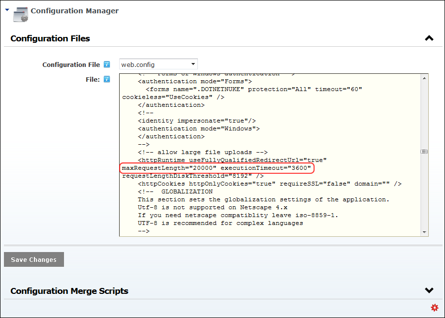

Modifying Maximum Request Length
How to modify the Maximum Request Length value which sets the maximum files size (in Kilobytes) allowed for upload (by default ASP.NET limits the size of file uploads to 4 Megabytes). This value is maintained in the web.config file and is updated using the Configuration Manager. In the below example, we will allow 100 MB uploads (1024 Kb x 100).
Note: It is unusual, but worth noting, that for large file uploads (100MB), the memory available to your Web server's AppPool must be large enough. If you notice problems uploading large files, you should contact your hosting provider and verify that AppPool memory allocations are adequate.
- Navigate to Host >
 Configuration Manager.
Configuration Manager.
- Expand the Configuration Files section.
- At Configuration File, select web.config from the drop down list. This loads the web.config file into the File text box.
- Locate the line of code that includes the text "maxRequestLength". Tip: You can use the Find (Ctrl + F) feature on your Web browser.
- Edit the maximum request length value as required. E.g. maxRequestLength="20000"
- Optional. If you choose to increase the value to 20000 or greater, it is recommended that you also add an execution timeout which sets the number of seconds allowed before asp.net terminates the operation. In this scenario, insert the text executionTimeout="3600" after maxRequestLength, as shown in the below image.
- Click the Save Changes button. A message reading "Changing the web.config will cause your website to reload and may decrease site performance while the application is reloaded by the web server. Would you like to continue?"
- Click the OK button to confirm.
